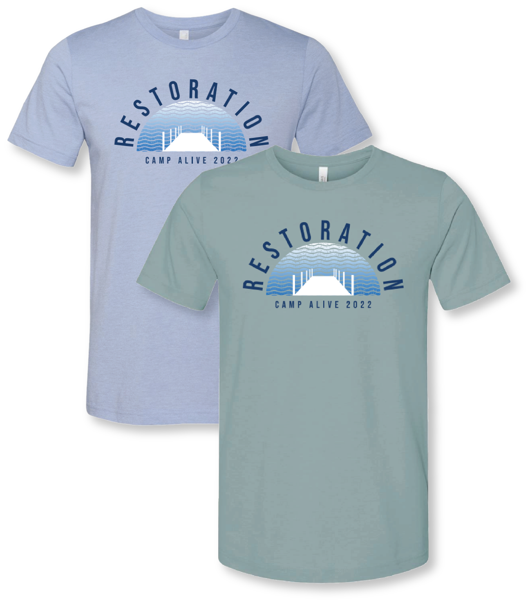

Restoration 2022
Restoration stands as a testament to the transformative power of nature and faith, brought to life through a captivating design journey tailored for a high school and middle school Christian summer camp nestled by the serene waters of a Texas lake getaway. Charged with infusing the beauty of the lake and the spirit of renewal into every aspect of the project, I embarked on a creative odyssey to craft a visual identity that would resonate with campers seeking solace and connection in the embrace of nature.
At the heart of the design lies the logo, a picturesque portrayal of a tranquil dock amidst gentle waves, capturing the essence of Restoration in its serene simplicity. With delicate strokes and a keen eye for detail, I endeavored to evoke the tranquility and renewal found in the camp's idyllic lakeside setting, inviting participants to embark on a journey of spiritual rejuvenation and self-discovery.

For the merchandise and stationery design, I drew inspiration from the vibrant hues of a summer day by the lake, infusing light blues reminiscent of clear skies and summery pinks reminiscent of blooming flowers. Each piece served as a canvas for the harmonious fusion of nature's beauty and the camp's mission of restoration, creating a visual tapestry that mirrored the soul-stirring experience awaiting campers as they embarked on a journey of renewal and spiritual awakening.